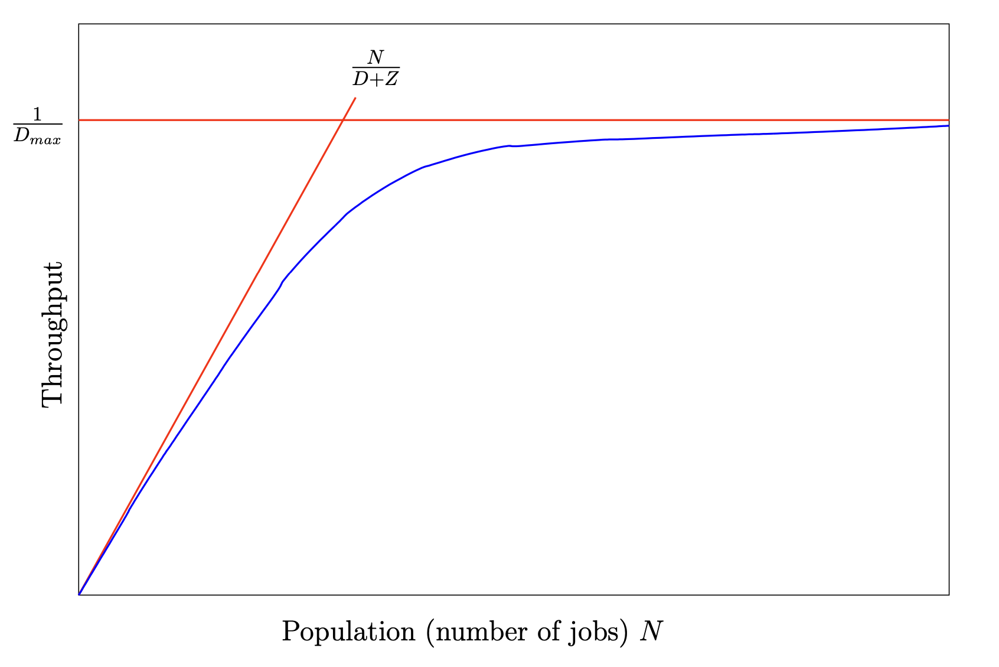
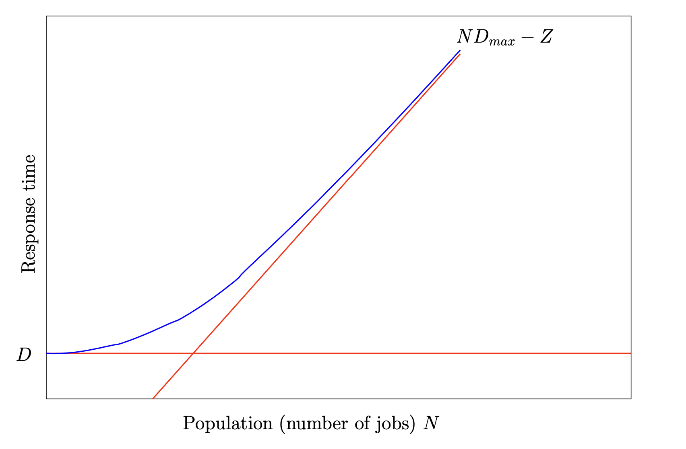
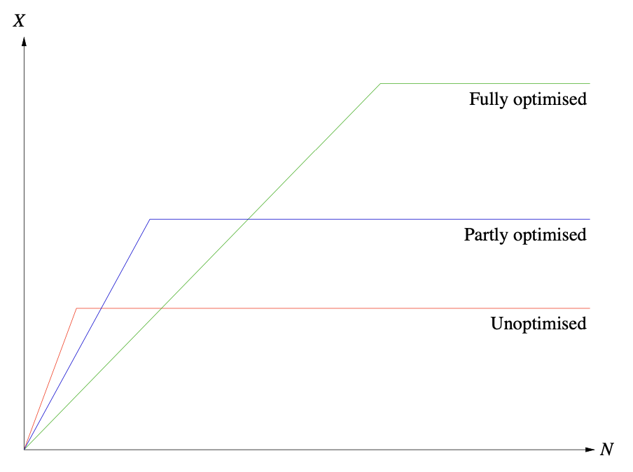
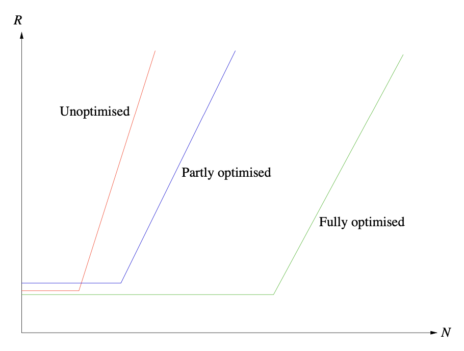
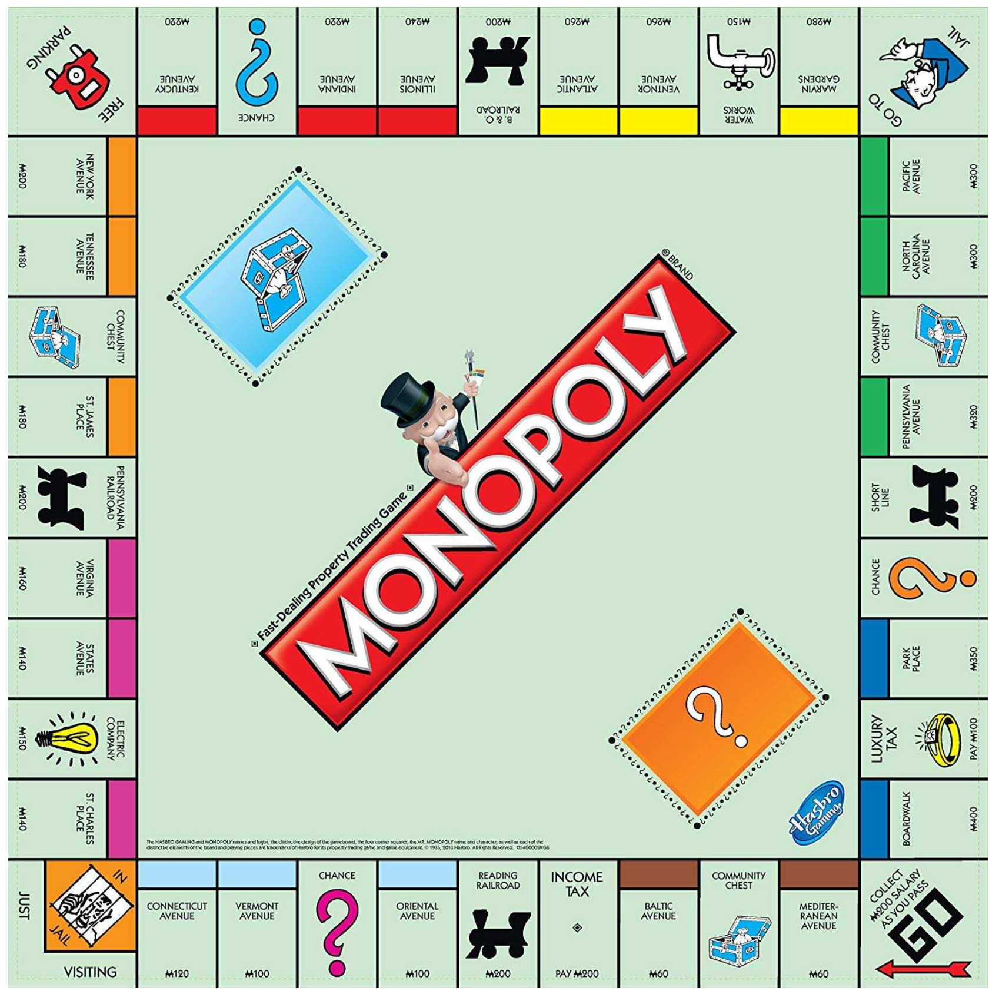
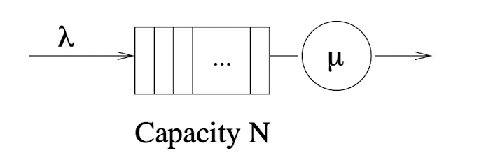
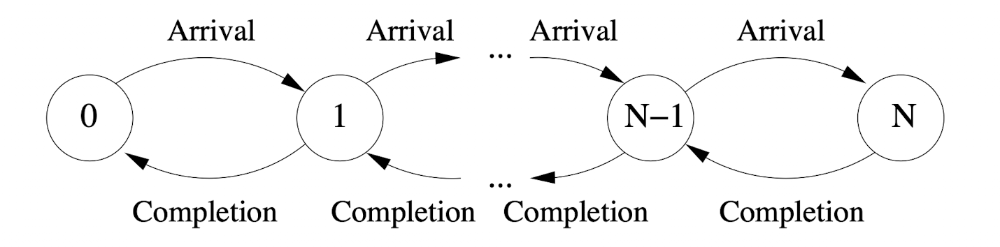
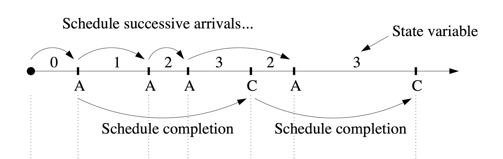
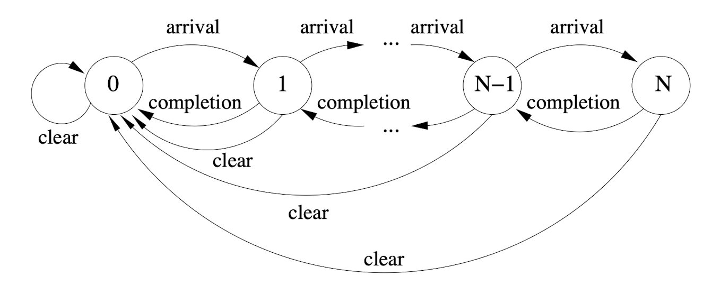

Preface
This book contains my notes for course 60020 Simulation and Modelling by Tony Field and Giuliano Casale at Imperial College London.
This book's source can be found here. Please feel free to submit any issues / pull requests if anything is wrong or unclear.
Operational Laws
Given an arbitrary system (real, simulated, etc), if measurements can be made upon it then the 'operational laws' link these quantities together.
For example, take an "open" system (more on this later) which has arrivals entering it and completions exiting it:
Arrivals Completions
------->(System)---------->
For an amount of time \( T \), let:
- \( A \) represent the number of a arrivals
- \( C \) represent the number of completions
From this, we can begin to determine three relationships:
- The arrival rate is \( \lambda = {A \over T} \) (arrivals per unit time)
- The average inter-arrival time is \( \lambda^{-1} = {T \over A} \) (average amount of time between arrivals)
- The throughput (traffic rate) is \( X = {C \over T} \) (completions per unit time)
(Note that throughput can be meassured on any arc).
The Flow Balance Assumption
Typically the number of arrivals is equal to the number of completions (i.e. \( \lambda = X \)). This is the case when either the number of arrivals and completions are equal (\( A = C \)) or if their difference (\( A - C \)) is small in comparison to them. A system that is in equilibrium (or steady state) must satisfy this.
If over time (as \( T \rightarrow \infty \)) this assumption does not hold, then the system is fundamentally unstable.
Open and Closed Systems
An open system is one where jobs can flow in and out of it freely. As a result, the number of jobs in the system can vary over time.
In a closed system, the number of jobs circulating around is fixed to some value \( N \). An example of a closed system is:
*------------------*
| |
| |
| |
*---->(System)-----*
The throughput of this example system is the traffic rate on the looping (ingoing and outgoing) arc.
Resources
If a resource (server, mutex, network port, etc) is busy for a total time of \( B \), then:
- The utilisation of that resource is \( U = {B \over T} \) (the proportion of time that the resource is being used)
- The average service time of each job at the resource is \( S = {B \over C} \)
- The service rate is \( \mu = S^{-1} = {C \over B} \)
The Utilisation Law
\[ \begin{align} U &= {B \over T} \\ &= {B \over T} * {C \over C} \\ &= {B \over C} * {C \over T} \\ &= XS \end{align} \]
Since service rates are used a lot, this also comes out to \( U = {X \over \mu} \). Note that because \( B \le T \) and \( U = {B \over T} \) then \( U \le 1 \), so using \( U = {X \over \mu} \) we know that \( {X \over \mu} \le 1 \) so \(X \le \mu \). What this means is that the throughput must always be less than or equal to the service rate for the system to be stable.
Note that in the situation where the arrival rate equals the service rate (\( \lambda = \mu \)) this might seem like it would be a stable system but in general (and depending on the distributions of the inter-arrival times and service times) it is actually unstable (more on this later).
Little's Law
Given an open system, if the population of the system (\( A - C \)) was plotted over an observation period \( (0, T) \):
A - C
^ Total area = I
4|
|
3| +-----+ +---+
| | | | |
2| +-----+ +---+ +---+ +-------+ +---+
I/T- -|- - - -|- - -|- - -|- -|- - - -|- -|- - -|- - - -|- -|- -|
1|-------+ | | +-------+ +-----+ | | |
| | | | | | | | | | |
0*--------------------------------------------------------------->
0 t1 t2 t3 t4 t5 t6 t7 t8 t9 T Time
Then the total area under the graph \( I \) would be in "request-seconds". Then we have:
- The average number of jobs in the system is \( N = {I \over T} \)
- The average response time (the average time each job spends in the system) is \( R = {I \over C} \)
Using these, Little's Law can be derived:
\[ \begin{aligned} N &= {I \over T} \\ &= {I \over T} * {C \over C} \\ &= {C \over T} * {I \over C} \\ &= XR \end{aligned} \]
This means that the average number of jobs in a system is equal to the product of the throughput and the average response time.
Little's Law works on any system (or subsystem) in equilibrium. When a system is not yet under equilibrium (say, for example, the system is warming up) then it does not apply.
The Response Time Law
If a closed system has a fixed population of \( N \) users (or customers, packets, jobs, etc) working in "think/compute" mode (i.e. they have a "think time" \( Z \) between the completion of a job and the submission of the next) then this is a special case of Little's Law:
N users with think time Z
+-()-+
+ () +
*------+ .. +<-----*
| +-()-+ |
| |
| |
| |
*---->(System)-----*
Response time R
The average total time for each cycle is \( R + Z \) so from Little's Law: \( N = X * (R + Z) \) or rearranged as \( R = {N \over X} - Z \). Note this only applies for the entire closed system, any subsystem will still obey Little's Law.
Forced Flow Law
Take a system which contains multiple resources inside it and has \( C \) completions. Consider an arbitrary resource \( k \) inside the system, with \( C_k \) completions:
*------------------*
| C_k | C
--->| ... -->(k)--> ...|--->
| |
*------------------*
System
Note that \( C_k \) can be more than \( C \) if jobs go to resource \( k \) multiple times inside the system.
Let \( V_k = {C_k \over C} \) be the average number of visits each job makes to resource \( k \). Rearranging and dividing by both sides by \( T \) gives \( X_k = V_k X \), where \( X_k \) is the throughput of resource \( k \).
The Service Demand/Bottleneck Laws
Given an arbitrary node \( k \) inside an arbitrary system, the Service demand \( D_k = V_k S_k \) is the product of average number of visits \( V_k \) and the average service time \( S_k \).
If we multiply the RHS of this equation by \( X_k \over X_k \):
\[ \begin{aligned} D_k &= V_k S_k {X_k \over X_k} \\ &= \left( S_k X_k \right) \left( {V_k \over X_k} \right) \\ &= {U_k \over X} \end{aligned} \]
where X is the global throughput of the system. Rearranging gives \( U_k = D_k X \), whichs shows that every \( U_k \) and \( V_k \) is linked by the global throughput.
Bottlenecks and Throughtput Bounds
Since \( U_k = D_k X \) and \( U_k \le 1 \), then we know \( X \le {1 \over D_k} \) for every node \( k \) in the system. From this we get that \( X \le {1 \over D_max} \) where \( D_{max} \) is the maximum of \( D_k \).
In a system under heavy load we can say that \( U_{max} \approx 1 \) and \( X \approx {1 \over D_{max}} \). What this means is that \( 1 \over D_{max} \) is the upper asymptotic bound on throughput under heavy load, and the resource with the highest demand \( D_{max} \) is the bottleneck resource of the system. Note that if the system is open, then \( \lambda = X \) so we also require that \( \lambda \le {1 \over D_{max}} \) for the system to be stable.
In a system under light load jobs are never queued and so the average total time they spend at each resource \( k \) is just \( D_k \) (remember \( D_k \) is the product of the average number of visits per job and the average service time at that resource), so we can say that for the entire system the response time \( R \) is the sum of all service demands: \(R = D_1 + D_2 + ... + D_k \). In a closed system, we can apply this to the response time law:
\[ \begin{aligned} X &= {N \over (R + Z)} \\ &= {N \over (D + Z)} \end{aligned} \]
where \( D = D_1 + D_2 + ... + D_k \). This means that \( N \over (D + Z) \) is the upper asymptotic bound on throughput under light load.
Combining these two limits, we can say that in general: \( X \le min \left( {1 \over D_{max}}, {N \over (D + Z)} \right) \). Note that in an open system we say that \( Z = 0 \) but we also recognise that \( N \) is not fixed. The bound still applies, however it is not as tight as in a closed system.
When throughput is plotted against the number of jobs, it typically looks like this:

Response Time Bounds
Just like with throughput, we can calculate the bounds for response time. In a system under high load, since the throughtput is bounded by \( X \le {1 \over D_{max}} \) we know that:
\[ \begin{aligned} R &= {N \over X} - Z \\ &\le N D_{max} - Z \end{aligned} \]
In a system under low load, every job experiences the average service demand at each node without needing to queue. That means that the response time is equal to the sum of the service demands \( D \), thus \( R \ge D \).
Putting these together we get \( R \ge max \left( D, N * D_{max} - Z \right) \). When response time is plotted against number of jobs it looks like:

Performance Optimisation
Performance optitmisation means / involves:
- Understanding / modelling the system
- Finding the bottleneck node
- Fixing the bottleneck
When you fix the bottleneck you change the bounds / limits described in the previous two sections. For example, these two graphs show how optimisations can affect the shape of the throughput \( X \) or response time \( R \) against number of jobs \( N \) plots:
 
Traffic Equations
Consider an arbitrary system with \( n \) nodes, where each node \( k \) in \( 1 \le k \le n \) has \( C_k \) completions. When the system is at equilibrium, the number of arrivals is equal to the system to the number of completions \( A = C \), and each job arrives exactly once to the system.
Now consider two arbitrary and distinct nodes \( i \) and \( j \) where \( 1 \le i, j \le n \). Assume that a job that comletes at \( i \) has a fixed probability \( r_{ij} \) of moving to node \( j \). Then for any node \( k \), the number of completions \( C_k \) must equal the sum of:
- the number of arrivals to the system \( A \) multiplied by the probability that an arriving job will move to node \( k \) directly, denoted as \( a_k \).
- the sum of the products of every node's number of completions and probability that a job will move to \( k \) (note this includes the cyclic arc from \( k \) to \( k \)).
\[ C_k = A a_k + C_1 r_{1k} + C_2 r_{2k} + \ldots + C_n r_{nk} \]
If both sides are divided by the total number of completions in the system \( C \) we get an equation for the number of visits \(V_k = {C_k \over C} \):
\[ V_k = a_k + V_1 r_{1k} + V_2 r_{2k} + \ldots + V_n r_{nk} \]
Note that \( A = C \) hence why it disappears from \(A a_k \).
If we divide by the total time \( T \) instead, we get an equation for the node throughput \( X_k \):
\[ X_k = \gamma_k + X_1 r_{1k} + X_2 * r_{2k} + \ldots + X_n * r_{nk} \]
where \( \gamma_k = X a_k \) is the direct contribution to throughput from external arrivals.
We can now take these equations and turn them into vector equations:
\[ \vec{V} (\boldsymbol{I} - \boldsymbol{R}) = \vec{a} \] \[ \vec{X} (\boldsymbol{I} - \boldsymbol{R}) = \vec{\gamma} \]
where:
- \( \vec{V} \) is the vector of number of visits for each node.
- \( \boldsymbol{I} \) is the identity matrix.
- \( \boldsymbol{R} \) is the maxtrix of probabilities that a job goes from node \( i \) to node \( j \).
- \( \vec{\gamma} \) is the vector of direct contributions to throughput from external arrivals for each node.
Note that often we use arrival rate of node \( i \) (denoted as \( λ_i \)) instead of throughput. Since arrival rate is the same as throughput, we can write:
\[ \vec{\lambda} (\boldsymbol{I} - \boldsymbol{R}) = \vec{\gamma} \]
Poisson Processes
A Poisson arrival processes is an arrival stream where the inter-arrival times \( T \) are both independent and exponentially distributed:
\[ P(T \le t) = 1 - e^{(-\lambda t)} \]
Here, \( \lambda \) is often called the processes' "rate" parameter and is equal to the reciprocal of the average inter-arrival time.
Since the inter-arrival times are exponentially distributed, for a fixed time window the number of arrivals is poisson distributed:
\[ P(A_t = n) = {(\lambda t)^n * e^{-λt} \over n!} \]
where \( A_t \) is the number of arrivals for time interval \( t \).
Poisson processes are often an effective approximation for real world random arrival processes as arrivals are typically:
- independent to each other.
- ignorant of previous arrivals and the state of the system they are arriving at.
Properties of the Exponential Distribution
Here are three properties of the exponential distribution that will be useful to recap:
- The exponential distribution is memoryless, meaning that the future is independent to the past:
\[ \begin{aligned} P(X \le t + s | X > t) &= 1 - {P(X \gt t + s \land X \gt t) \over P(X > t)} \\ &= 1 - {P(X \gt t + s) \over P(X \gt t)} \\ &= 1 - {e^{-\lambda (t + s)} \over e^{-λt}} \\ &= 1 - {e^{-\lambda s} * e^{-\lambda t} \over e^{-\lambda t}} \\ &= 1 - e^{-\lambda s} \\ &= P(X \le s) \end{aligned} \]
- If \( X_1 \sim exp(\lambda_1) \) and \( X_2 \sim exp(\lambda_2) \) then \( min(X_1, X_2) \sim exp(\lambda_1 + \lambda_2) \):
\[ \begin{aligned} P(min(X_1, X_2) \le t) &= 1 - P(min(X_1, X_2) \gt t) \\ &= 1 - P(X_1 \gt t \land X_2 \gt t) \\ &= 1 - e^{-\lambda_1 t} e^{-\lambda_2 t} \\ &= 1 - e^{-t(\lambda_1 + \lambda_2)} \end{aligned} \]
- If \( X_1 \sim exp(\lambda_1) \) and \( X_2 \sim exp(\lambda_2) \) then
\[ \begin{aligned} P(X_1 < X_2) &= \int_0^{\infty} P(X_1 \lt X_2 | X_1 = x) * \lambda_1 * e^{-\lambda_1 x} dx \\ &= \int_0^{\infty} P(X_2 \gt x) * λ_1 * e^{-\lambda_1 * x} dx \\ &= \int_0^{\infty} e^{-\lambda_2 x} * \lambda_1 * e^{-\lambda_1 x} dx \\ &= \lambda_1 \int_0^{\infty} e^{-x(\lambda_1 + \lambda_2)} dx \\ &= \lambda_1 \left[ {-e^{-x(\lambda_1 + \lambda_2)} \over \lambda_1 + \lambda_2} \right]_0^\infty \\ &= \lambda_1 {0 - (-1) \over \lambda_1 + \lambda_2} \\ &= {\lambda_1 \over \lambda_1 + \lambda_2} \\ \end{aligned} \]
and therefore by swapping \( X_1 \) and \( X_2 \):
\[ P(X_2 < X_1) = {\lambda_2 \over \lambda_1 + \lambda_2} \]
Merging Poisson Processes
When two independent Poisson processes with rates \( λ_1 \) and \( λ_2 \) are merged together, the result is also a Poisson process with rate \( λ_1 + λ_2 \).
Proof
Let:
- \( T_1 \) and \( T_2 \) be the time until the next arrival for two Poisson processes.
- \( T \) be the time until the next arrival for the merged process.
Then we get:
\[ \begin{aligned} P(T \le t) &= P(min(T_1, T_2) \le t) \\ &= 1 - e^{-t(λ_1 + λ_2)} \end{aligned} \]
Note that this is described more in detail in the Properties of the Exponential Distribution section.
This shows that the inter-arrival times of the merged process is exponential distributed, and so the merged process is Poisson.
Generalised Merging
We can also generalise this for \( n \ge 2 \) processes. Consider a binary tree of merges. Since the output of a merge is Poisson, it can be merged with another process, thus creating a chain of merges:
()()
\/ merge
()()
\/ merge
()()
\/ merge
()
Probability of Arrival Orders
The probability that the first arrival will come from the first stream is given by:
\[ P(T_1 \lt T_2) = {\lambda_1 \over \lambda_1 + \lambda_2} \]
and likewise the probability that the first arrival is from the second stream is:
\[ P(T_2 \lt T_1) = {\lambda_2 \over \lambda_1 + \lambda_2} \]
Note that this is described more in detail in the Properties of the Exponential Distribution section.
Splitting Poisson Processes
If we split a Poisson process with rate \( \lambda \) into two streams, such that there is:
- chance \( p \) (\( 0 \le p \le 1\)) that the arrival will go to the first stream.
- chance \( 1 - p \0 that the arrival will go into the second stream.
then the resulting two processes will independent Poisson processes with rates \( \lambda p \) and \( \lambda (1 - p) \) respectively. From this we can say that:
\[ P(N_1(t) = m) = {(\lambda t p)^m * e^{-\lambda t p} \over m!} \]
and
\[ P(N_2(t) = n) = {(\lambda t (1 - p))^n * e^{-\lambda t (1 - p)} \over n!} \]
where:
- \( t \) is the time interval.
- \( N_1(t) \), \( N_2(t) \) are the number of arrivals seen at both output streams respectively during interval \( t \).
Simulation
Broadly there are three classes of simulation:
- Monte Carlo.
- Discrete time.
- Discrete event.
Monte Carlo
Run multiple 'one shot' experiments using random numbers (no state, just make random observations and repeat many times) and aggregate the results.
For example, \( \pi \) can be estimated using Monte Carlo simulation:
- Take a circle of radius \( r \) and a square with side length \( 2r \).
- Pick random points inside this shape.
- Calculate
No. in circle / No. in squareto estimate \( \pi \over 4 \) (by the ratio of the areas \( \pi r^2 \over (2 \pi)^2 \) )

Discrete-Time Simulation
Given a state transition system (e.g. nodes with arcs) take \( n \) steps randomly throught the system, moving from one state to the next in each discrete step. There may or may not be a notion of time in the discrete steps made.
For example, consider a game of Monopoly where you want to find the probability of landing on each board position in the game. This can be done by starting at GO, simulating \( n \) dice rolls, following the rules of the game (including chance and community chest cards), and counting how many times each tile is landed on.

Discrete-Event Simulation (DES)
Similar to discrete time, steps are made through a state transition system, but instead these steps are triggered by discrete events in continuous time. To do this, there is a single global clock that dictates the virtual time of the simulation. The triggering events are scheduled in order of time, and when an event occurs the global clock is updated to the timestamp of the event.
Virtual ---> Direction of time
Time
|
V
|---*------*----*--------*---*-------*------> ...
Timestamp: 0 3 8 9 19 21 28
Events can also update the state of the simulation and queue future events.
Since events don't occur in order of generation but rather in order of their randomly sampled timestamps, discrete-event simulation is therefore an asychronous model of time. Discrete-time simulation on the other hand is a synchronous model of time as events occur in order of their generation (e.g. in a Monopoly simulation, the state gets updated as soon as the dice is rolled).
In Practice
In practice a discrete-event simulation has:
- Continuous time (i.e. a floating-point number)
- A collection of variables (both discrete and continuous) that constitute the simulation state.
- A priority queue of events, ordered by their timestamp.
- A scheduler adds new events to the priority queue.
- A descheduler removes events from the priority queue.
- Measurement code will also be required to get output data from the simulation.
Evolution of Time
History <-- Virtual --> Future
Time
|
V
Event 1 Event 2
|--------------*-----------------*------------------> ...
t1 t2
| |
|<--------------->|
Δt = t2 - t1
In the diagram above, Event 1 at time \( t_1 \) schedules Event 2 at time \( t_2 \). To do this, an amount of time \( \Delta t \) is added to \( t_1 \) to get \( t_2 \). \( \Delta t \) is thus the interarrival time of the events, and so it can be modelled as a random variable. We'll need to be able to sample \( \Delta t \) by sampling its distribution (more on this later).
Discrete-Time to Discrete-Event Example
Using the Monopoly example, to change it from a discrete time simulation to a discrete event simulation we can model the move times explicitly using some random variable \( T \) with a specified distribution. Then at each move, we can add to the current time a sample of this distribution to progress through time (e.g. current time + sample of T). However if we want to simulate \( P \) players who roll their dice independently, we will need to think of a way to resolve the issue of updating time and shared resources (e.g. cards). This can be done using a sequence of move events in time order and controlled access to shared resources (e.g. via queueing).
Example of a Single-server FIFO Queue
Consider a finite single-server queue with a mean interarrival time \( \lambda \), mean service rate \( \mu \), and queue capacity of \( N \):

We can model this queue using the following graph, where the number of each state represents the length of the queue:

As shown in this diagram, two events are required to model this queue: Arrival and Completion.
The timeline priority queue will contain Arrival and Completion events. Completing each event will update the state depending on the state of the simulation, described by the following rules / pseudocode:
Let State = 0
Let N be the max queue length
Let there be a priority queue
Queue an Arrival at the start of the simulation
Get next event in queue
If the event is an Arrival:
State += 1
If State < N:
Queue a new Arrival
If State == 1:
Queue a new Completion
If the event is a Completion:
State -= 1
If State == N - 1:
Queue a new Arrival
If State > 0:
Queue a new Completion
Note that in this example the Queue steps implicitly sample the interarrival time for the specific events interarrival time distribution.

Suppose a Clear event also needs to be added, which will reset the state to \( 0 \). If the state is not equal to \( 0 \) then
Queue a Clear at the start of the simulation
If the event is a Clear:
If state > 0:
Dequeue the Completion event
If state == N:
Queue a new arrival
State = 0
Queue a new Clear
